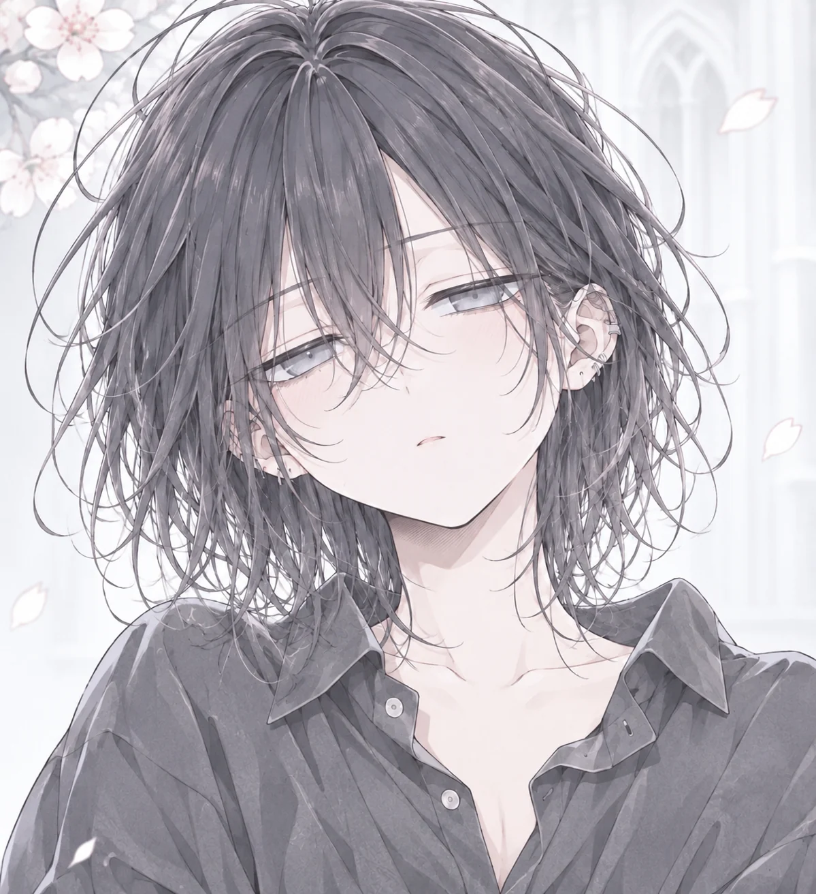
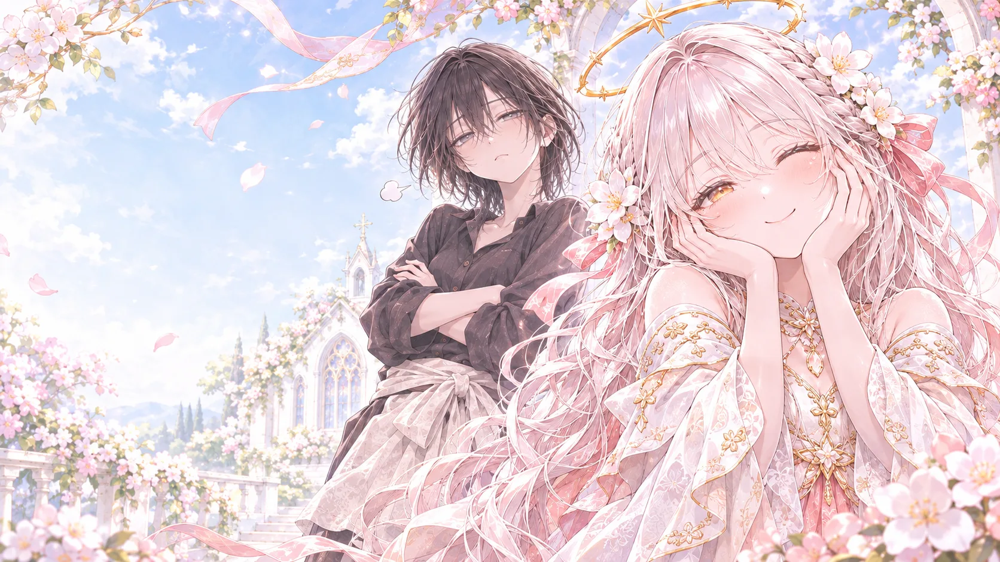
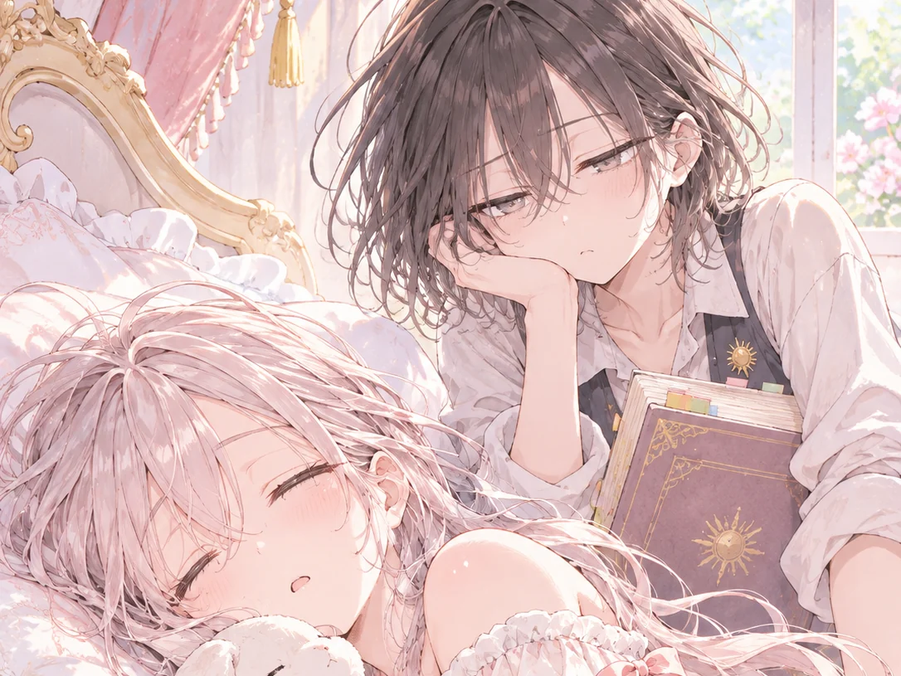
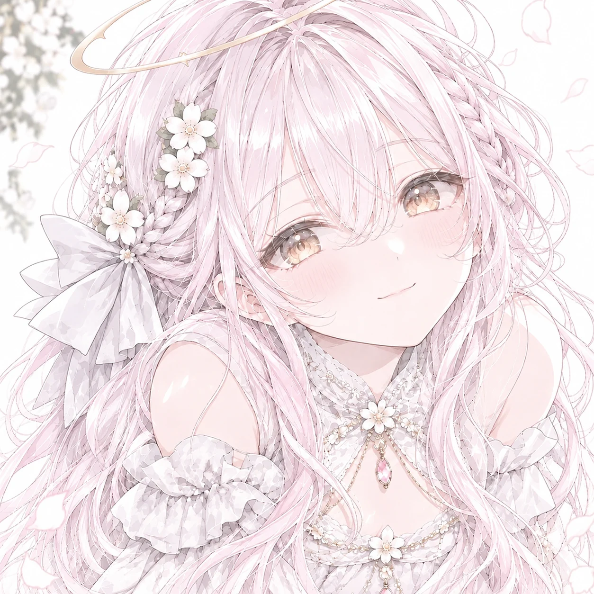

次期聖女メルの侍女
ニナ
できれば一生、働かずに暮らしたい。
- 無気力
- 皮肉屋
- 情にもろい

Nina & Mel

ニナ「この村、大丈夫？」
メル「失礼すぎ！」

次期聖女メルの侍女
できれば一生、働かずに暮らしたい。

次期聖女
わたしの世話係なんだから、ちゃんと構ってよね。
放っておきたい女と、放っておいてくれない女。
Story
現代日本で働かずに暮らしていたニナは、ある日、深い森に囲まれた花の村で目を覚ます。押しつけられた仕事は、聖女候補メルの世話係。可愛くてわがままで、人の都合などおかまいなしのメルと、面倒ごとは全部放っておきたいニナ。恋愛禁止の掟がある神殿の暮らしで、憎まれ口ばかりの二人の距離は、なぜか少しずつ近づいていく。
あらすじは仮のものです
The Village
村の真ん中を通る石畳の道。花を飾った木の家が並び、風車の影がゆっくりと横切っていく。
村の人たちが集まって食事をとる場所。温かいスープと焼きたてのパンの匂いがする。
窓辺も玄関も花でいっぱいの家。村ではどの家も、季節の花を欠かさない。
丘の上の白い大聖堂。聖女と聖女候補が祈りを捧げる場所。恋愛は禁止。
年に一度の、村でいちばん大切なお祭り。聖女が神へ仕え、村に一年間の豊穣と平穏をもたらすとされている。